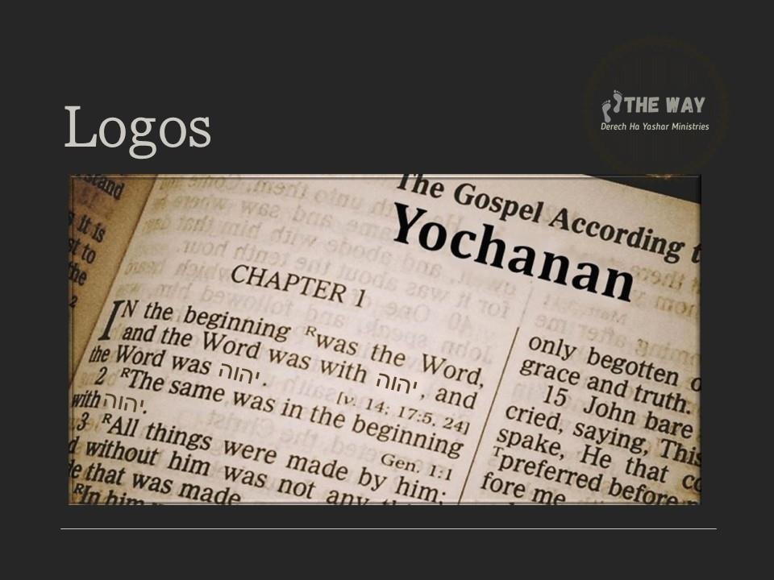

Contents

Yahushua is called the firstborn of Creation. Does this mean that Yahushua was created and existed prior to his human birth? Is this evidence of the doctrine of incarnation?
To understand this title for Yahushua we must use Wisdom and Insight and overcome the pagan philosophy of “Logos” and the physical to spiritual parallel of “light”.
It is imperative that we all know what happened when Greeks and Romans took over the faith. We know the Greeks did not understand Scripture and twisted it into a lie:
Qorintiyim Aleph/1 Corinthians 120Where is the wise? Where is the scribe? Where is the disputer of this age? Has not יהוה made foolish the wisdom of this world? 21For since, in the wisdom of יהוה, the world (the Roman Empire) through wisdom did not know יהוה, it pleased יהוה through the foolishness of the message preached to save those who believe. 22For Yehudim request a sign, and Greeks seek after wisdom (through philosophy); 23but we preach the Passover sacrifice of Yahushua, to the Yehudim a stumbling block and to the Greeks foolishness, 24but to those who are called, both Yehudim and Greeks, the Messiah is the power of יהוה and the wisdom of יהוה. 25Because the foolishness of יהוה is wiser than men, and the weakness of יהוה (if there is such a thing) is stronger than men.
Kepha Bet/2 Peter 314Therefore, beloved, looking forward to these things, be diligent to be found by Him in peace, without spot and blameless; 15and consider that the longsuffering of our King is salvation—as also our beloved brother Sha’ul, according to the wisdom given to him, has written to you, 16as also in all his letters, speaking in them of these things, in which are some things hard to understand, which untaught and unstable people twist to their own destruction, as they do also the rest of the Scriptures.
We say that the Hebrew texts and the Gospel and all the Hebrew names were “Hellenized” not realizing what that means. That word does not just mean the Hebrew texts were translated into Greek and Latin. What Hellenized literally means is that the polytheistic religion of the Greeks was merged into the texts and the text altered to be “Greek appropriate” so the pagans could be assimilated into the one world religion called Christianity. Hellenism is Greek paganism. Everyone should fully understand what happened during this time in history. The Truth of יהוה was merged with pagan Hellenism through syncretism. We see below that nothing changed with Hellenism and that the same Elohim continued to be worshipped until 300 CE. This is when Constantine brought everything under one pagan religion called Christianity:
http://en.wikipedia.org/wiki/Hellenistic_religion
Hellenistic religion
From Wikipedia, the free encyclopedia
Hellenistic religion is any of the various systems of beliefs and practices of the people who lived under the influence of ancient Greek culture during the Hellenistic period and the Roman Empire (c. 300 BCE to 300 CE). There was much continuity in Hellenistic religion: the Greek Elohim continued to be worshipped, and the same rites were practiced as before.
We call this assimilation of Greek Hellenism to be Hellenized. We know that the pagan Greek religion (Hellenism) overtook the truth of יהוה and the resulting religion is now called Christianity:
http://en.wikipedia.org/wiki/Hellenization
Hellenization
From Wikipedia, the free encyclopedia
The twentieth century witnessed a lively debate over the extent of Hellenization in the Levant and particularly among the ancient Palestinian Yehudim that has continued until today. The Judaism of the diaspora was thought to have succumbed thoroughly to its influences. Bultmann thus argued that Christianity arose almost completely within those Hellenistic confines and should be
read against that background as opposed to a more traditional (Palestinian) Yehudimish background
I want to firmly establish this historical fact because “Logos” was one of those philosophical ideas of Hellenism that was incorporated into the texts and the texts were altered by the Greek and Hellenized Yehudim who translated it.
To justify the false doctrine of “pre-existence” or the “incarnation” that Yahushua pre-existed with יהוה and was co-creator and in fact was Elohim! Christianity quotes Yochanan Chapter 1:
John 11In the beginning was the Word, and the Word was with God, and the Word was God. 2He was with God in the beginning. 3Through him all things were made; without him nothing was made that has been made. 4In him was life, and that life was the light of all mankind. 5The light shines in the darkness, and the darkness has not overcome it.
6There was a man sent from God whose name was John. 7He came as a witness to testify concerning that light, so that through him all might believe. 8He himself was not the light; he came only as a witness to the light.
9The true light that gives light to everyone was coming into the world. 10He was in the world, and though the world was made through him, the world did not recognize him. 11He came to that which was his own, but his own did not receive him. 12Yet to all who did receive him, to those who believed in his name, he gave the right to become children of God— 13children born not of natural descent, nor of human decision or a husband’s will, but born of God.
14The Word became flesh and made his dwelling among us. We have seen his glory, the glory of the one and only Son, who came from the Father, full of grace and truth.
15John testified concerning him. He cried out, saying, “This is the one I spoke about when I said, ‘He who comes after me has surpassed me because he was before me.’” 16Out of his fullness we have all received grace in place of grace already given. 17For The Law was given through Moses; grace and truth came through Jesus Christ. 18No one has ever seen God, but the one and only Son, who is himself God and is in closest relationship with the Father, has made him known.
All the modern translation like the NIV above are uninspired Hellenized translations giving preference to Greek mythology not the Hebrew mindset. Let us define terms and then correct the modern Hellenized translations with the intent and mindset of Yochanan who was a Hebrew Yehudim not a Greek philosopher.
"Sound Bites" [taking Scripture out of context] vs. Sound Teaching
The doctrine of “pre-existence”, “Logos”, and the “Incarnation” are very good examples of taking Scripture out of context. Taking Scriptural “sound bites” and stringing them all together out of context to create an implied doctrine. These doctrines are always easy to identify because they violate clear explicate doctrine (sound doctrine). Anytime an implied doctrine is formulated that contradicts explicit Scriptures we must reject that doctrine as our “understanding” is flawed.
Let's look closer at how the doctrine evolved that Yahushua is literally the "Word" or “Divine Logos” of יהוה that became flesh used to justify incarnation. Is Yahushua literally the "Word" or is Yahushua the fulfilment of יהוה's Word from the beginning. There is a big difference.
Logos a pagan philosophy
As you can see, the entire doctrine of incarnation that led to the acceptance of the pagan Babylonian Trinity through syncretism did not come about until 4 centuries after Yahushua lived and died. That false doctrine that Yahushua is literally "Logos" and not the fulfilment of יהוה's predestined plan evolved in the 4th Century through the "tradition and reasoning" under the influence of pagan Greek philosophers such as Plato...
The Abingdon Dictionary of Living Religions, page 767, tells us:
TRINITY (Ch). The Dogma, formulated authoritatively in fourth century church Councils, that Christians worship one Elohim in three persons (Father, Son, Set-apart Spirit) and one substance. Under pressure to explain to a hostile Roman world how Christians counted themselves monotheists, Christian apologists (notably Justin Martyr, d. 165) combined Johannine and Stoic-Platonic understanding of the term Logos ("Reason," or "Word") in order to maintain that the Son was both Elohim's own self-expression and a being distinct from him.
So, we read above The Trinity was justified not through the Word of יהוה (because it cannot be) it was justified using Hellenism or the “combined Johannine and Stoic Platonic” pagan philosophy of the term “Logos”.
We read below that the term logos was defined by Christians according to the interpretations of pagan influenced philosophers in order to promote a false pagan god-savior:
Encyclopedia Britannica, Volume 7, page 449.
LOGOS (Greek:"word, "reason, or plan"), plural logoi, in Greek philosophy and theology, the divine reason implicit in the cosmos, ordering it and giving it form and meaning. Though the concept defined by the term logos is found in Greek, Indian, Egyptian, and Persian philosophical and theological systems, it became particularly significant in Christian writings and doctrines to describe or define the role of Jesus Christ as the principle of God active in the creation and the continuation structuring of the cosmos and in revealing the divine plan of salvation to man. It thus underlies the basic Christian doctrine of the pre-existence of Jesus… The identification of Jesus with the logos was further developed in the early church but more on the basis of Greek philosophical ideas than on Old Testament motifs.
The concept of Logos was based on Greek philosophical ideas not on any prophecy or Old Testament “motifs” or Hebrew understanding at all. It is and remains a pagan philosophy of Hellenism.
The Religions of Ancient Greece and Babylonia clearly tells us that the Greek philosophical ideas were developed in Alexandria, Egypt from the pagan Babylonian mystery religions. These ideas pertaining to the meaning of Logos penetrated as a result of modern religious thought through the philosophy of Greece and Egypt. It was through syncretism that we have the word “Logos” or “Word” written in our English Bibles instead of “The Plan of יהוה”:
The Religions of Ancient Greece and Babylonia, by A. H. Sayce. pages 229-230
Many of the theories of Egyptian religion, modified and transformed no doubt, have penetrated into the theology of Christian Europe, and form, as it were, part of the woof in the web of modern religious thought. Christian theology was largely organized and nurtured in the schools of Alexandria, and Alexandria was not only the meeting place of East and West, it was also the place where the decrepit theology of Egypt was revivified by contact with the speculative philosophy of Greece. Perhaps, however, the indebtedness of Christian theological theory to ancient Egyptian dogma is nowhere more striking than in the doctrine of the Trinity. The very terms used of it by Christian theologians meet us again in the inscriptions and papyri of Egypt. Originally the trinity was a triad like those we find in Babylonian mythology. The triad consisted of a divine father, wife, and son. The father became the son and the son the father through all time, and of both alike the mother was but another form.
It is from the pagan mystery religions that the Greek philosophers developed the idea of Logos:
The New International Dictionary of New Testament Theology, Volume 3, page 1085
Among the systems offering an explanation of the world in terms of the logos, there are the Mystery Religions. These cultic communities did not see their task as lying in the communication of knowledge of a scientific nature, but of mysteries to their initiates who strove for purification in the recurrent enactment of sacred actions. The Foundation for these cultic actions was Sacred Text. Among them were the cults of Dionysus, the Pytha- goreans, and the Orphic Mysteries. By means of these cults, non Greek thought, such as in the Isis-Osiris Mysteries, which Osiris the logos created by Isis is the spiritual image of the world. Similarly in the cult of Hermes, Hermes informed his son Tat in the Sacred Text belonging to the cult, how by God's mercy, he became logos, and thus a son of God. As such, he (Hermes) brought regulation and form into world, but himself remained a mediating being between God and matter, on one side, and God and man on the other. The logos can also, however, appear as the son of Hermes, resulting in a triple (trinity) gradation: God (who is Zeus), Son (Hermes), and LOGOS (this is what they believed in ROME and this is where we get our false doctrine of incarnation from).
Now back to Yochanan Chapter 1 where this pagan philosophy of “Logos” was mistranslated into our English Bibles by uninspired Hellenized translators.
John 11In the beginning was the Word, and the Word was with God, and the Word was God. 2He was with God in the beginning. 3Through him all things were made; without him nothing was made that has been made. 4In him was life, and that life was the light of all mankind. 5The light shines in the darkness, and the darkness has not overcome it.
The word “word” in these verses comes from the Greek word logos. The pagan Christians, so eager to promote the pagan Trinity and incarnation (The Spirit of the False Messiah), attached to the word every pagan interpretation. But they deliberately ignore the fact that Yochanan was a Hebrew Yehudim who had nothing to do with pagan Greek philosophy and the Gospel of Yochanan was not written from the pagan mindset associated with the Greek word logos. The Gospel of Yochanan was written from a Hebraic mindset and most probably penned originally in Hebrew not Greek.
The Wycliffe Bible Encyclopedia, Moody Press, Chicago, IL, Volume 2 pages 1046-1047.
Many scholars have argued that the apostle John had this philosophical development (of the pagan LOGOS) in the back of his mind when he wrote the prologue to his Gospel and that he actually tried to impart some of these (pagan) concepts. For a long time many have contended that the background of the fourth Gospel was essentially Hellenistic rather than Hebraic. In dealing with such an assertion we may note that studies in the Dead Sea scrolls have tended to confirm the traditional conservative position that the cultural orientation of the Gospel of John was Hebraic. Moreover, we must observe that John was a simple fisherman from Palestine. … there is no evidence that he imbibed any Greek pagan philosophical orientation in John Chapter 1. If he intended to be philosophical in the first few verses, he certainly was not anywhere else. We may argue that John used the word "logos." in its ordinary meaning.
This source admits that Yochanan used this word in its ordinary meaning in the Hebraic mindset. They further admit that Yochanan's writings were Hebraic not Greek which means the actual word Yochanan used was the Hebrew word dâbâr not the Greek word logos.
The Encyclopedia Judaica admits that the style of most of the writings in The New Testament is, in fact, Hebraic. The Greek versions we have today of The New Testament are later Hellenized versions translated from earlier Hebrew original versions that were most likely burned after the council of Nicea. So “logos” is a mistranslation; the original version of Yochanan Chapter 1 used the Hebrew word dâbâr.
The Encyclopedia Judaica, Volume 12, page 1060
THE LANGUAGE OF THE NEW TESTAMENT.
Although the language of the New Testament, in the form that it exists today, is Greek, two earlier influences are still discernible.
(1) THE INFLUENCE OF THE ARAMAIC-HEBREW ORIGINALS. Because most of the authors were Yehudimish Nazarenes, they spoke, for the most part, Aramaic, and some also mishnaic Hebrew. This influence, which was detectable particularly in the original versions of Mark and Matthew, survives to some degree in their extant Greek versions and in several of the Epistles as well, including James and Jude.
(2) THE SEPTUAGINT. Since this translation was used by many authors, the New Testament contains not only Aramaic words and phrases, which the disciples heard from Jesus and took care to remember out of reverence for their master (e.g. Talitha Kumi (Mark 5:41), Kum, Rabboni, Eli, Eli (Elohi, Elohi) lama sabachthani (Matt. 27:46; Mark 15:24)), but also expressions and phrases which retain their Hebrew flavor although they were transmitted through the Greek translation of the Hebrew Bible.
So, Yochanan wrote under inspiration of יהוה, not of an incarnated pre-existent god-saviour, but of the wonderful Plan of יהוה which is what the Hebrew word dâbâr implies. The Anchor Bible shows us from the Talmud that seven things were in יהוה's mind showing us what the Hebraic mindset was. His Plan was from the beginning and this plan included the Savior. This is the mindset of Yochanan Chapter 1 not the pagan philosophy of “Logos”:
The Anchor Bible, Ephesians 1-3, page 111
IN THE TALMUD tractate Pesachim 54a; cf. Nedarim 39b, seven things, i.e. the law, repentance, paradise, Gehinnom, the throne of glory, the heavenly sanctuary, and the messiah are not called pre-created, but pre-conceived in (יהוה's) thoughts.